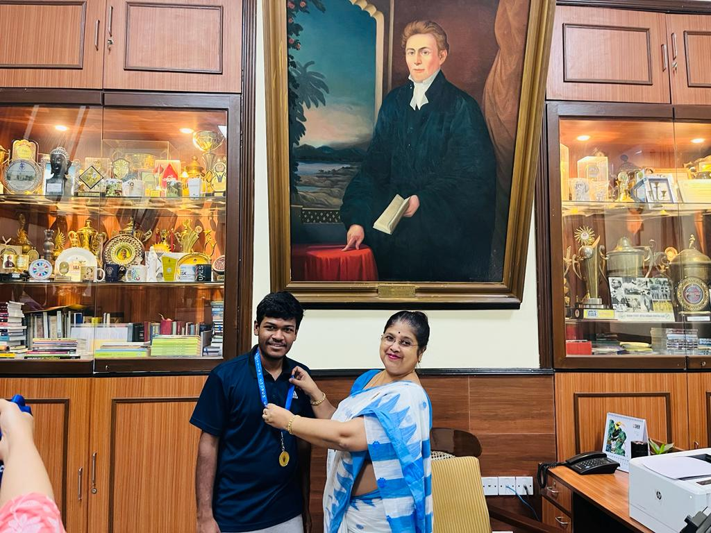
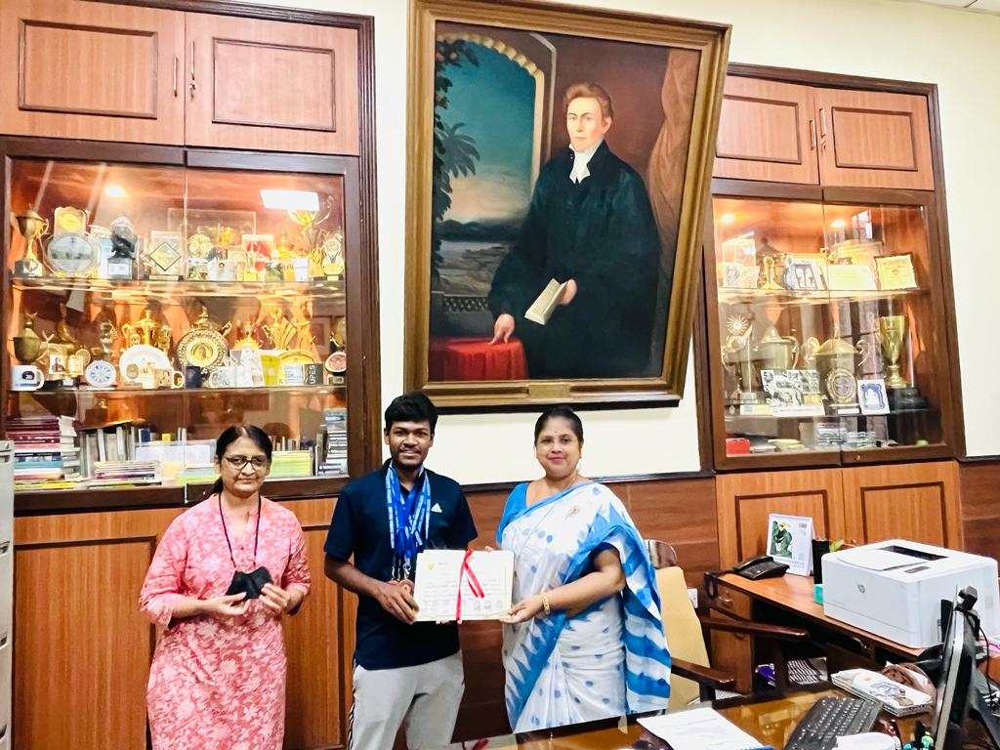
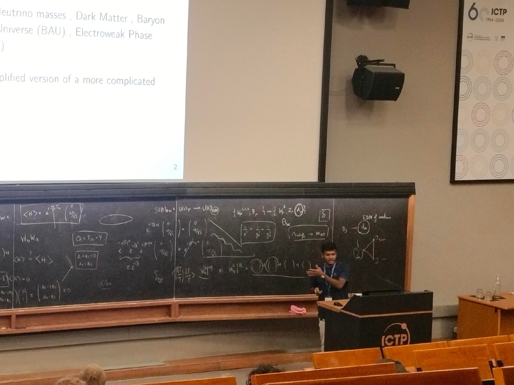
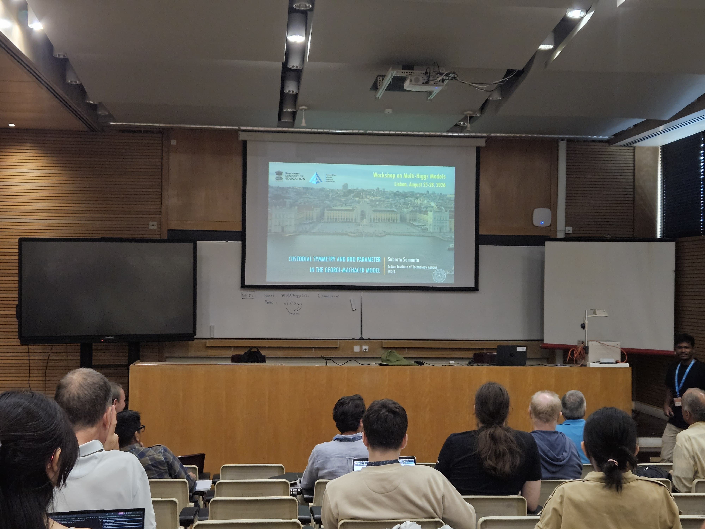
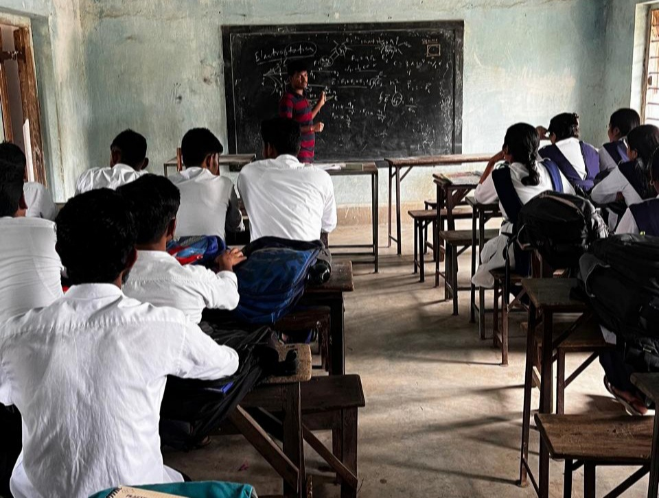
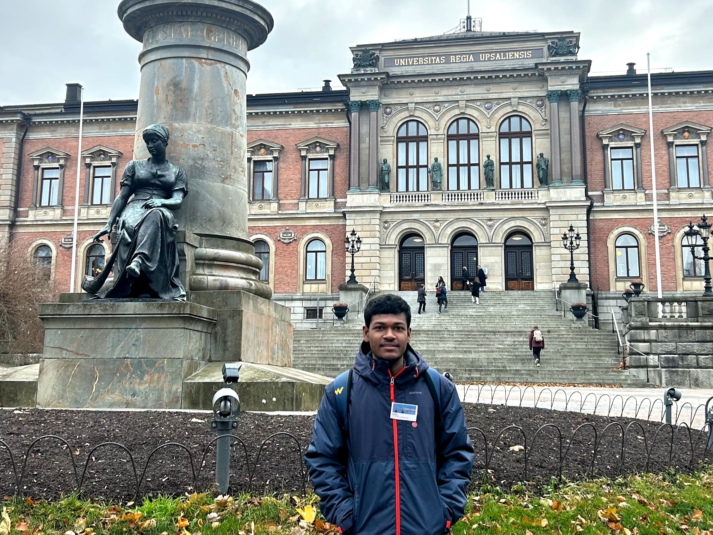
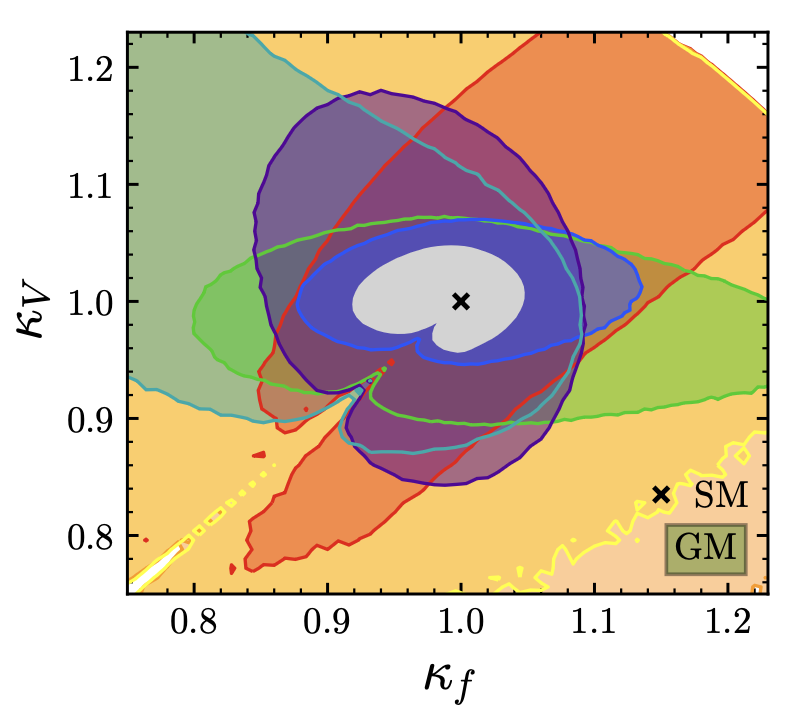
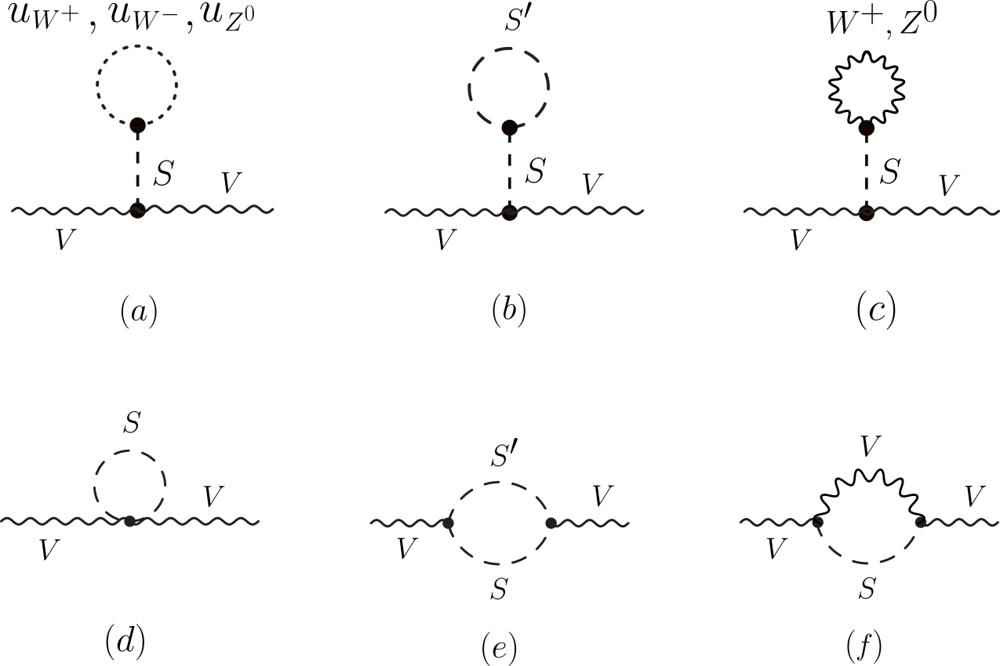
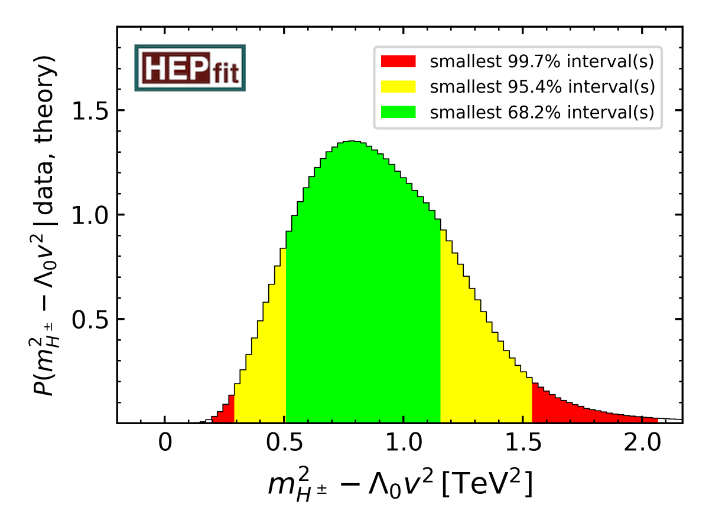

Subrata Samanta
Indian Institute of Technology Kanpur,
Kanpur 208016, India.
Welcome to my webpage! I am a PhD student in the Department of Physics at Indian Institute of Technology (IIT) Kanpur, and financially supported by the Ministry of Education, Government of India, under the Prime Minister’s Research Fellows scheme.
I am trying to understand the mathematical framework of quantum field theory and explore physics beyond the standard model. The Standard Model is the most accepted theory of elementary particle physics, but there are several limitations, i.e., explanation of neutrino masses, accommodating dark matter, matter-antimatter asymmetry, etc. Therefore, new ideas beyond the standard model are required to explain such physical phenomena. Read more.
My research focuses on a wide range of theoretical aspects of high-energy physics. In particular, I am interested in Higgs physics, electroweak symmetry breaking, CP violation, scattering amplitudes, effective field theory, hadron structure, and phase transitions. I am conducting my research under the supervision of Dr. Debtosh Chowdhury, Associate Professor at IIT Kanpur.
Education
- Ph.D. in Physics
- M.Sc. in Physics
- B.Sc. in Physics
Awards and Honors
- Prime Minister’s Research Fellowship (Direct Entry, August 2022 - Present)
- Dhirendra Mohan Saha Roy Gold Medal (Scottish Church College, March 2023)
- The Certificate of Merit (Scottish Church College, March 2023)
- Charu Chandra Chaudhury Medal (Scottish Church College, March 2023)
- Mrs. P. R. Das Memorial Medal (Scottish Church College, March 2023)
- Pravat Kumar Ghosh Medal (Scottish Church College, March 2023)
- Late Srikant Mishra Scholarship (IIT Kanpur, Feb 2021)
- National Topper of the National Graduate Physics Examination (Oct 2019)






Research

Perturbative Unitarity and Global Fits.— The scalar sector beyond the Standard Model (SM) contains several quartic couplings. Unlike the Yukawa and gauge couplings, these scalar quartic couplings can be large and may violate perturbativity and unitarity at high scales. For a weakly interacting extended scalar sector, perturbative unitarity delineates the region of parameter space where perturbative calculations can be trusted and therefore provides an important constraint in phenomenological studies. At the tree level, perturbative unitarity in principle allows large quartic couplings. However, such large couplings break perturbativity beyond tree level, as the higher-order corrections become comparable to the tree level contributions. We computed the one-loop corrections to all 2 → 2 bosonic scattering amplitudes in the SU(2)L triplet scalar extensions of the SM and derived next-to-leading-order (NLO) unitarity bounds on the scalar quartic couplings. Since the scalar masses depend non-linearly on the quartic couplings, these unitarity limits cannot be translated directly into limits on the masses of the additional scalars. We therefore performed a numerical analysis with the open-source code HEPfit, in which we implemented the triplet-extended scalar sector, to determine the allowed mass ranges of the exotic scalars arising from the SU(2)L triplets. These mass bounds have direct implications for collider studies and serve as the dominant constraints in certain regions of the parameter space. Incorporating these theoretical bounds, we performed global fits to the 125 GeV Higgs signal strengths from LHC Run 1 and Run 2, recent measurements of the 95 GeV excesses, B-physics observables, and the latest direct search limits on additional heavy and light scalars at the LHC and LEP. This combined global analysis yields the most stringent constraints on the parameter space of the triplet-extended scalar sector. In the presence of the doubly charged scalar, the di-photon rate is enhanced. As a result, the triplet-extended scalar sector can accommodate the ATLAS and CMS di-photon and LEP bb̄ excesses around 95 GeV. However, the CMS di-tau excess near 95 GeV is accommodated only at the ∼2σ level. References: arXiv:2404.18996 arXiv:2506.06427

Electroweak Precision Observables.— Electroweak quantum corrections to the relation MW = MZ cosθW (which translates into ρ = 1) are precisely calculable in the SM; hence, the precise measurement of the ρ parameter puts a constraint on the extended scalar sectors. Among the electroweak precision observables, the ρ parameter provides one of the most stringent constraints on scalar extensions containing SU(2)L triplets. The Georgi-Machacek (GM) model, which extends the SM scalar sector by a complex and a real triplet under SU(2)L × U(1)Y, preserves ρ = 1 at tree level due to the global SU(2)L × SU(2)R symmetry in the scalar sector. However, this global symmetry is broken by the hypercharge interactions. At one loop, the symmetry-violating operators that are absent at tree level are generated radiatively. We studied the one-loop renormalization of the model and found that an additional input parameter, beyond the three SM inputs αem(mZ), Gμ, and mZ, is required to completely parametrize the electroweak precision observables at one loop. We further found that the one-loop correction to the ρ parameter depends only logarithmically on the masses of the new scalars, while it is quadratically sensitive to the triplet vacuum expectation value. References: arXiv:2601.06252

Vacuum Stability.— Extended scalar sector of the SM can alleviate the instability of the electroweak vacuum up to the Planck scale. However, the question remains how can one ensure the vacuum stability of the scalar potential in the extended scalar sector? To ensure the stability of the vacuum, one of the necessary criteria is the potential to be bounded from below (BFB), where the scalar quartic couplings play the most crucial role. The necessary and sufficient BFB conditions for a generic quartic scalar potential of a large number of fields cannot always be recast into a fully analytical compact form. We compute the necessary BFB conditions in the field subspaces on the scalar quartic couplings containing triplet fields and find that numerically these BFB conditions are a very good approximation of the full set of necessary and sufficient BFB conditions while being computationally more efficient. Additionally, due to the presence of the additional scalar multiplets, the scalar potential can have several types of minima at both tree and loop level, including multiple electroweak (EW) breaking minima, as well as charge-breaking (CB) and CP-breaking minima. If our EW vacuum is not the global minimum of the potential, it is metastable and can decay via quantum tunnelling into a deeper minimum. This raises the question of the stability of our EW vacuum in extended scalar sectors. We studied this question in the Type-II two-Higgs-doublet model, one of the simplest and most popular extensions of the SM scalar sector, and analysed the stability of the EW vacuum in a gauge-independent manner at tree level and beyond. We found that there is no reason to panic, as a Bayesian global fit incorporating the NLO unitarity constraints and the latest experimental measurements excludes the regions of parameter space with a metastable EW vacuum at both tree and one-loop level. References: arXiv:2404.18996 arXiv:2607.18380
Publications
Recent publications
-
Fate of Metastable Vacua in the Type-II Two-Higgs Doublet Model AcceptedAccepted in Phys. Rev. D · arXiv:2607.18380 [hep-ph]
-
Next-to-Leading Order Unitarity Fits in the Extended Georgi-Machacek ModelJ. Phys. G: Nucl. Part. Phys. 53, 085004 (2026)
For a complete list of publication, please refer to my InSPIRE or Google Scholar profile. (Note: in hep-ph papers, authors are listed in alphabetical order.)
Talks
Here are the details of the talks and seminars I have delivered.
- What can LHC data tell us about Higgs triplet models?
- What can LHC data tell us about Higgs triplet models?
- Custodial Symmetry and Rho Parameter in the Georgi-Machacek Model
- NLO Unitarity and Stability Bounds in Extended Higgs Sectors ▶ YouTube
- NLO Unitarity and Stability Bounds in Extended Higgs Sectors 📄 Slides
- NLO Unitarity and Stability Bounds in Extended Higgs Sectors
- NLO Unitarity and Stability Bounds in Extended Higgs Sectors
- Status of Triplet Extended Higgs Sector Models in the Light of NLO Unitarity and the Latest LHC Data
- Status of Extended Georgi-Machacek Model in the Light of NLO Unitarity and Latest Run II Data from LHC
- Probing the Higgs Potential at the Large Hadron Collider 📄 Slides
- Anisotropic Gauge Theory in Lattice QCD 📄 Slides
- Pressure and Shear Distributions inside the Proton
List of some informal talks at IIT Kanpur.
- Running Contributions to Radiative Higgs Decays in the SMEFT arXiv:2405.20371
- Constraining the Higgs Trilinear Coupling arXiv:2311.17995
- Factorization of Scattering Amplitudes-III: Large gauge transformations
- Factorization of Scattering Amplitudes-II: Soft factorization
- Factorization of Scattering Amplitudes-I: On-shell factorization
- Electroweak Symmetry Non-Restoration arXiv:2210.05680
Teaching
Explore my present and past teaching activities below:
-
Tutor at Bankura Christian College, West Bengal, India.
- Undergraduate Physics (Feb 2025 - Present)
-
Tutor at Raghunathbari Ramtarak High School, West Bengal, India.
- Class XI & XII - Physics (2023 - 2024)
-
Tutor at Deriachak Sri Aurobindo Vidyamath, West Bengal, India.
- Class XI & XII - Physics (2023 - 2024)
-
Mentorship for the physics subject at SATHEE. I have covered the following topics.
- Class XII: Electric Charges and Fields (Aug - Oct 2023)
- Class XII: Alternating Currents (Aug - Oct 2023)
-
Tutor at NPTEL for listed courses, with provided YouTube links.
- Physics Through Computational Thinking (Jan - Mar 2026)
- Thermal Physics (Jan - Apr 2025)
- Thermal Physics (Jan - Apr 2023)
-
Teaching Assistance at IIT Kanpur: Assisted in the following courses.
- Mathematical Physics (Aug 2026 - Present)
- Particle Physics (Jan 2026 - May 2026)
- Graduate Physics Laboratory (Aug 2024 - Nov 2025)
- Undergraduate Physics Laboratory (Nov 2022 - Feb 2023)
Lecture notes, problem sets, and supplementary materials are available here.